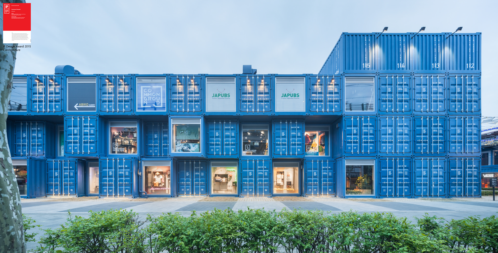
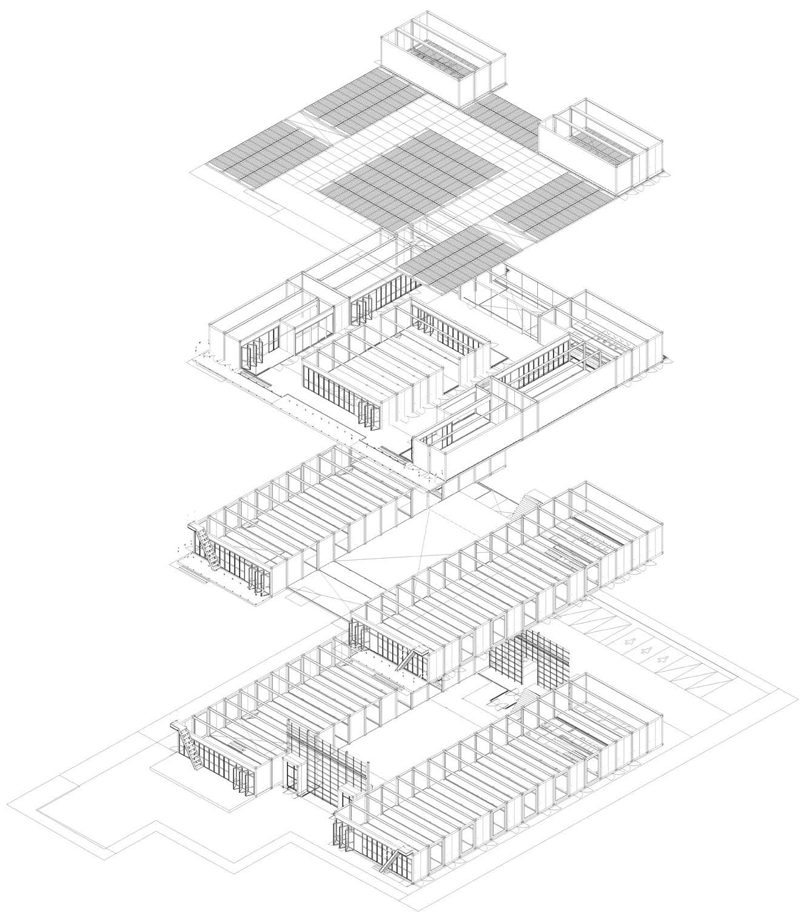
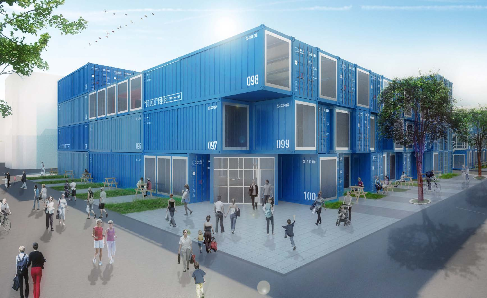
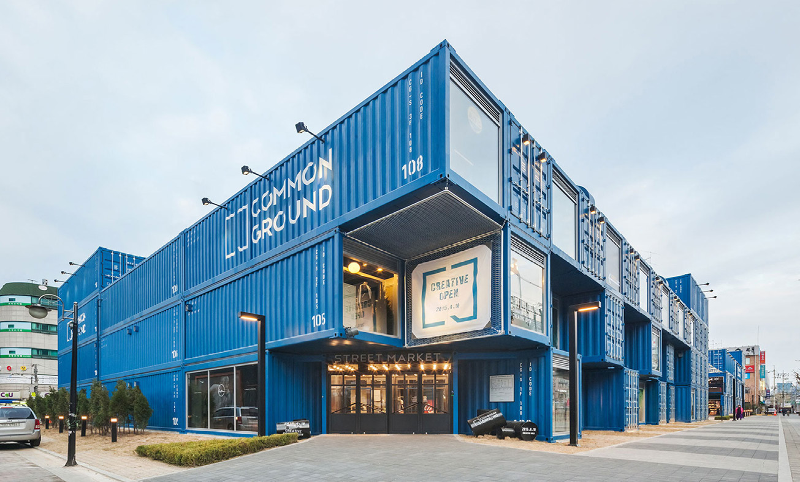
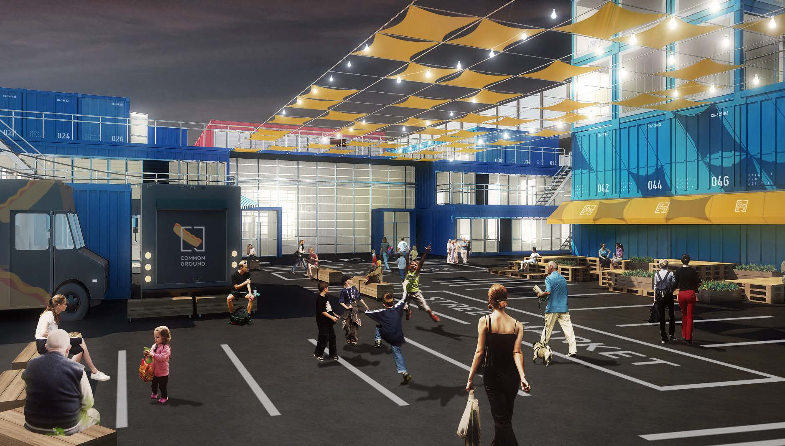
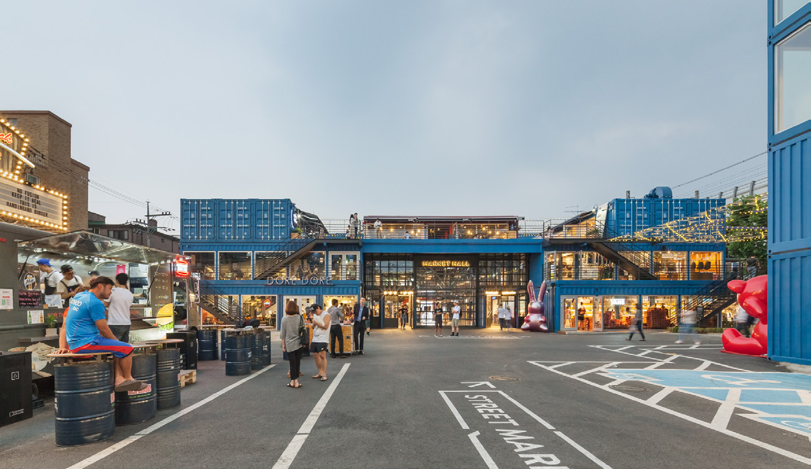
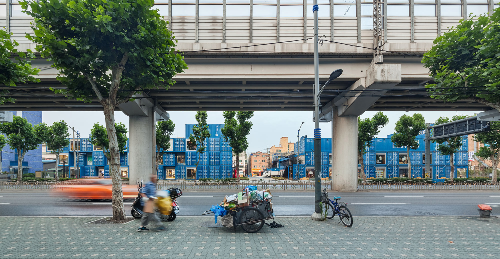

Common Ground
Catégorie_Architecture, centre commercial construit Lieu_ Séoul, Corée du Sud Temps du projet_ 2013-2014 Participation à tous les affaires du design dans “URBANTAINER” Publié sur Archdaily (titulé : Common Ground)
J’ai participé depuis l’étape du planning de l’affaire, les travaux avant le design m’ont vraiment intéressée. D’abord, on a décidé le conteneur des matériaux de construction pour déplacer et réutiliser. Puis, on a défini l’identité de marque du centre commercial comme “Connexion créative”, et on l’a encore expliquée avec trois idées: la communication entre les personnes, la rencontre de la marque avec les clients, et la connexion avec une communauté régionale. Ensuite, pour cela, on a proposé les trois éléments architecturaux. 1. la cour intérieure, de façon à ce que les personnes se rencontrent et plusieurs activités culturelles aient lieu. 2. l’atmosphère favorisée par les conteneurs, de sorte que des clients aient l’impression d’un marché de rue, pas un grand magasin. 3. l’atrium, pour que des artistes et des vendeurs locaux ouvrent un marché aux puces en toutes saisons.








